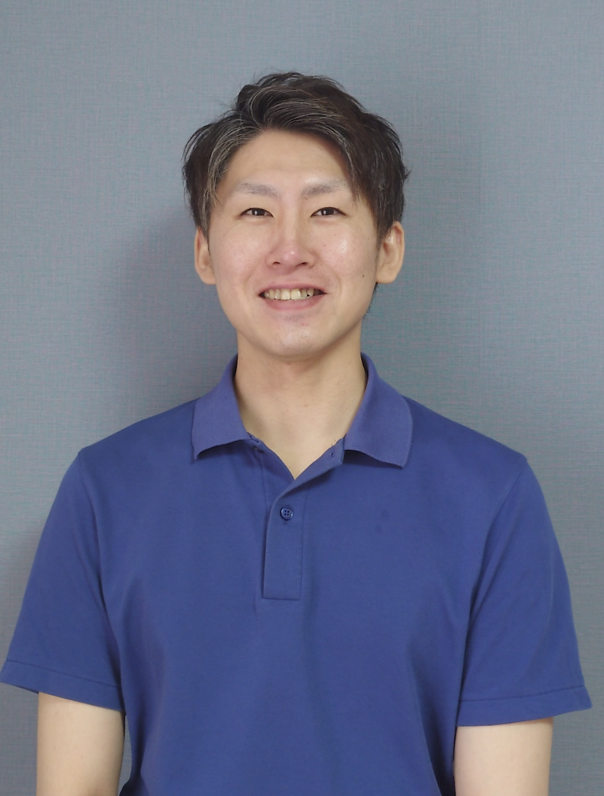
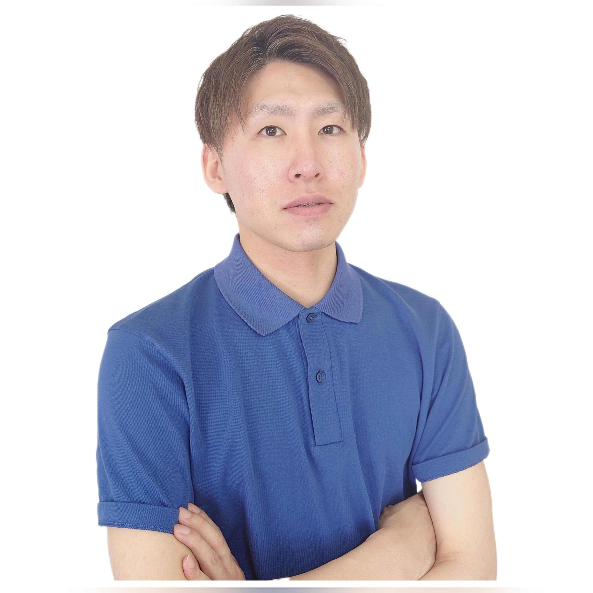

大切にしている姿勢
「この方はきっと良くなる」
私が大切にしていること
「この方はきっと良くなっていく」
そう信じながら、一人ひとりと向き合っています。
不調を抱えながら 頑張る毎日を 過ごしてきたあなたへ。
僕は20歳の時に初めてぎっくり腰を経験しました。それから約15年間、腰痛と繰り返すぎっくり腰に悩みながら日々、不安な毎日を過ごしてきました。
少しでも楽になりたくて、病院や整形外科はもちろん、接骨院、鍼灸、マッサージ、他にも色々な方法を試してみたけど、期待するほどの変化は得られず、諦めかけていました。
そんな毎日の中、ある整体技術との出会いをきっかけに、僕の身体は少しずつ、確実に変化していきました。以前はいつも「腰が痛い、違和感がある」を気にして制限していた生活が、今ではごく普通に旅行を楽しみ、大切な友人達とおいしい食事を純粋に楽しめる毎日へと変わっていきました。
この経験があるからこそ、不調があるだけで毎日の楽しさが何割も失われてしまう寂しさや悔しさが痛いほどわかります。身体が本来持っている力を信じて、笑顔あふれる生活を取り戻すまで、僕は一番の理解者として、あなたが自分らしい毎日を取り戻せるよう、心を込めて支えさせていただきます。

Reframe整体院 院長
お一人おひとりの生活にそっと寄り添います